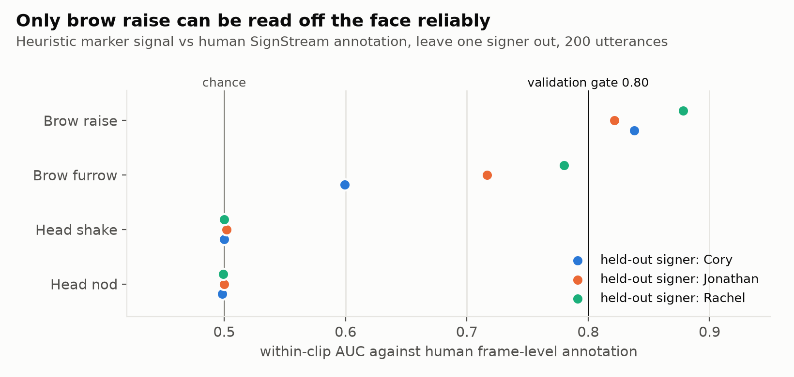
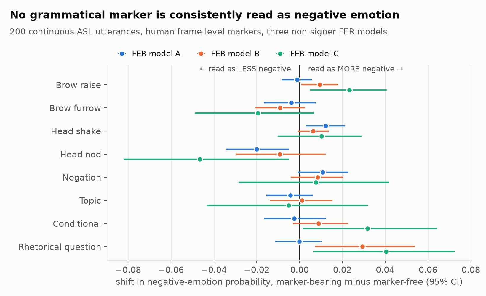
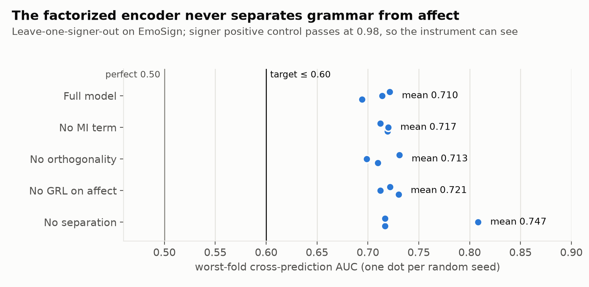
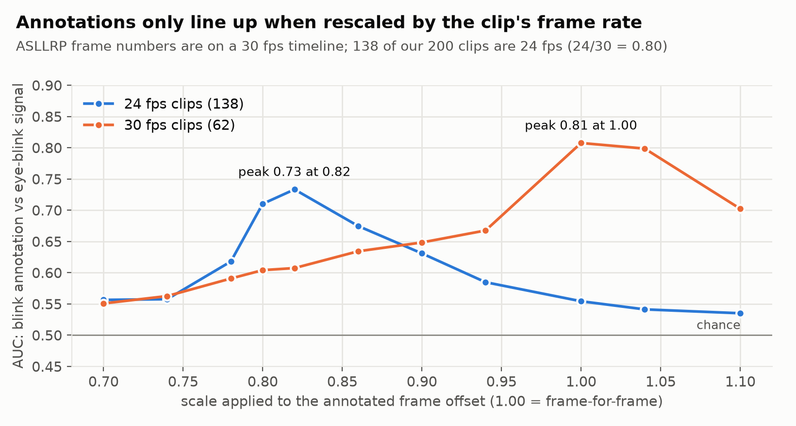

Is that face grammar or emotion?
In American Sign Language the face is part of the grammar: raised brows mark a yes/no question, a furrow marks a wh-question, a head shake marks negation. The same face also shows feeling. SEAM reads both channels in real time from 478 face landmarks, 52 blendshapes, two hands and the body, entirely in your browser.
What we measured
Every number below comes from a logged experiment in the repository. Several of our starting hypotheses were refuted, and we report those as plainly as the one that held.




How the vision pipeline works
The same steps run here in the browser and in the Python pipeline used for the experiments.
Perception
Three MediaPipe Tasks graphs run on each frame: Face Landmarker (478 points, 52 blendshapes, head transform), two Hand Landmarkers (21 points each) and Pose Landmarker (33 points).
Normalisation
Landmarks are centred on the shoulders and scaled by shoulder width, gaps are interpolated, and a One-Euro filter removes jitter without adding lag.
Three channels
Manual (hands and arms), non-manual (blendshapes, head pose) and prosody (speed, size, pauses of the signing).
Marker read-out
Brow raise is the mean of three brow blendshapes above the signer's own baseline. Head movements are read from oscillation of the head angles.
Validation
Each marker is scored against human SignStream annotations, frame by frame, on signers held out of any fitting.
Honest output
A signal that passed validation is shown as validated. One that did not is labelled. A model that did not learn is withheld.
What works, what does not, what is next
| Component | State | Evidence |
|---|---|---|
| Real-time perception | works | 41.8 ms median, 73.2 ms p95, 19.7–20.4 FPS on an RTX 3050 (4 GB) |
| Brow-raise marker | validated | Within-clip AUC 0.838 / 0.822 / 0.878 on three held-out signers |
| Brow furrow, head shake, head nod | not validated | 0.60 on the largest fold; head markers at chance even with a fitted detector |
| "Emotion models misread grammar" | not supported | Tested on isolated signs and on continuous signing; no marker met the rule |
| Grammar / affect factorized encoder | refuted | Worst-fold cross-AUC 0.694–0.726 against a target of 0.60 |
| Gloss recognition | at baseline | WER 0.920 equals always predicting the most frequent gloss, on 200 utterances |
| Expressive 3D avatar | works offline | SMPL-X body from video, exported as animated glTF; no human rating study yet |
| Sign-to-English translation, emotion-styled text | future work | Data is prepared (35,176 How2Sign sentences); not trained |
Dataset video is never redistributed. ASLLRP and EmoSign material is used for research under their terms; this page ships no signer video and sends none anywhere.